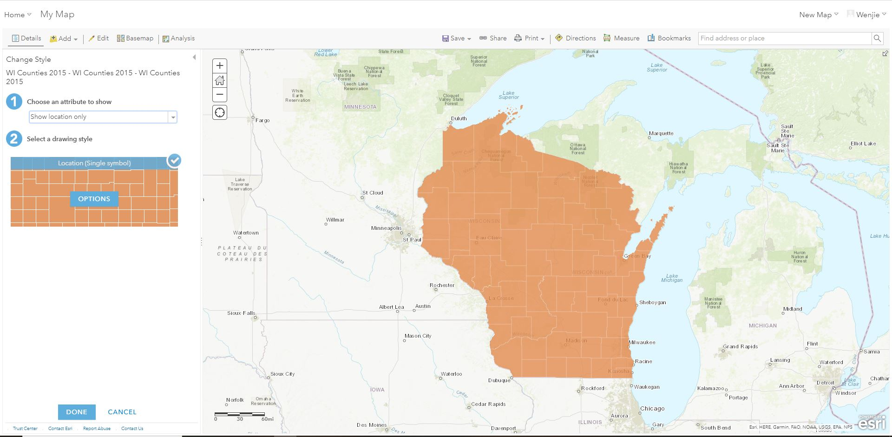

This tutorial gives an example to help students understand GIS technology allows people to connect data with geography. GIS can relate unrelated information by using location as the key index variable. Sometimes people don’t fully understand their data until they see how it relates to other things in a geographic context. And GIS can help people understand what belongs where.
Through this tutorial, student can get familiar with how to link tabular data to geospatial data by using ArcGIS Online. Instructors can add more exercises based on students’ need.
The following steps show how to find geospatial data from BTAA geoportal and tabular data from U.S. Census.
Tip
Click on any of the images in this tutorial to zoom in.
Visit the BTAA Geoportal and search with the keywords county boundary of Wisconsin
Open the result "County Boundaries [Wisconsin] {2015}"
Click the Download button and select "Original Shapefile" to download the data. Save as "WI_Counties_2015.zip". This polygon feature class represents boundaries of the 72 counties in Wisconsin. The data is derived from 1:24,000-scale sources. This feature class was last updated in June 2015.
Polygon Feature Class for Wisconsin County Boundaries
Open the first result "County Population Totals: 2010-2019" and click Wisconsin to download the table.
Annual Estimates of the Resident Population for Counties in Wisconsin: April 1, 2010 to July 1, 2019 (CO-EST2019-ANNRES-55), U.S. Census Bureau, Population Division, March 2020
Log into ArcGIS Online and create a Web Map
Adding a Layer in ArcGIS Online</ figcaption>
Add WI_Counties_2015.zip as a new layer from File
Choosing a File in ArcGIS Online
Choose an attribute to show. Here we use “show location only”
Choosing an Attribute to Show in ArcGIS Online
Click “show table” button to open attribute table and get to know what information was included in the geospatial dataset.
Show Table in ArcGIS OnlineAttribute Table in ArcGIS Online
Create a new excel file and name it as "Wisconsin Counties by Population.csv". Copy and paste the county name column and population in 2019 column from U.S. Census spreadsheet into this new excel file. We need to use county name as the common field to link those two tables. Therefore, the name of counties in both table should be the same.
Notice
Paste the values only and revise the name of counties by using the Replace tool.
Shared Attribute Between Two Tables
6. Add the “Wisconsin Counties by Population.csv” as a new layer and choose “None, add as table”
Add Layer from FileAdd CSV
 Estimated time to complete: 40-50 minutes
Estimated time to complete: 40-50 minutes
{kind=link}


{kind=link}
{kind=link}
{kind=link}
{kind=link}
{kind=link}
{kind=link}
{kind=link}
{kind=link}
{kind=link}